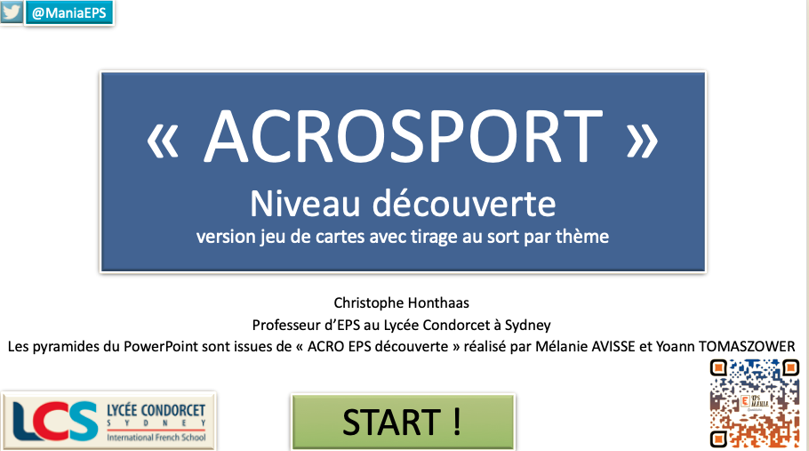
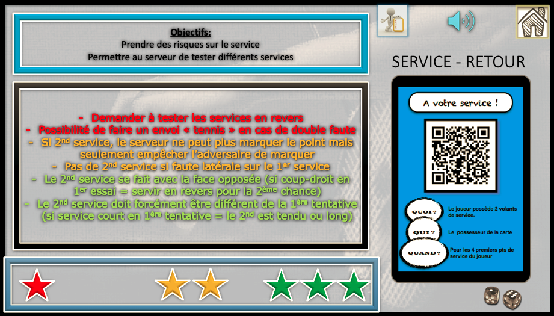
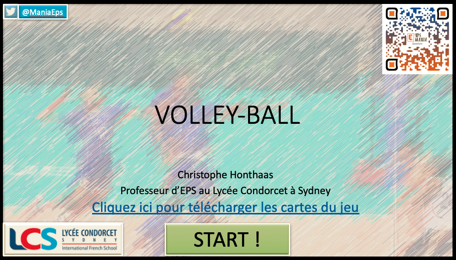
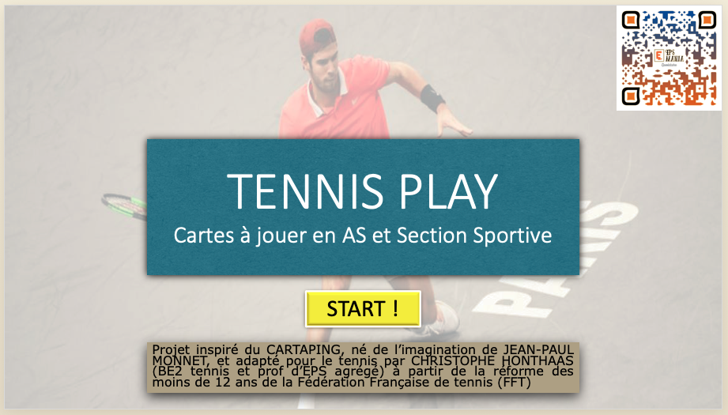
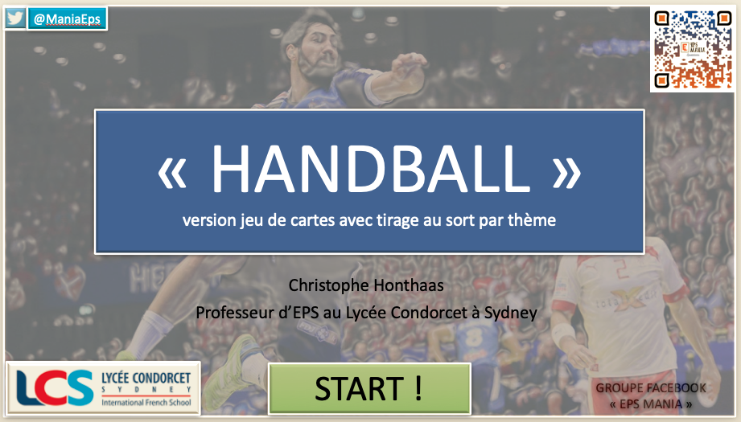
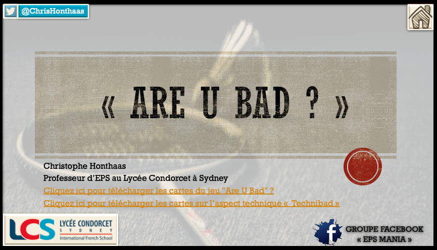
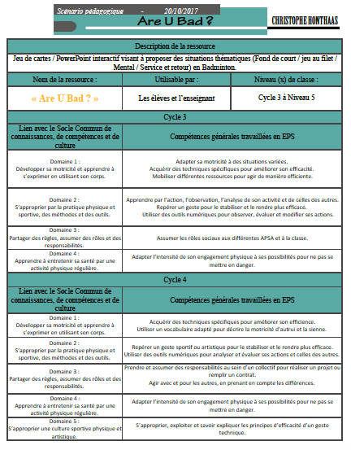
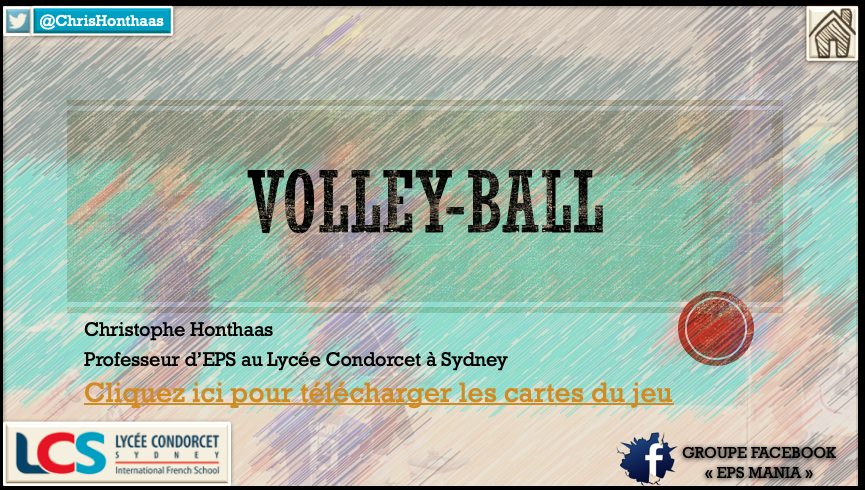
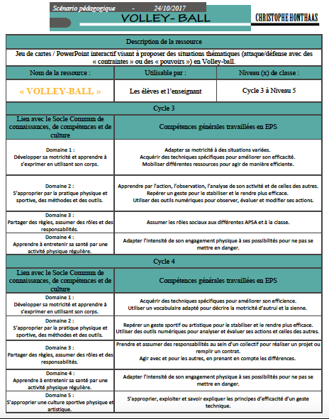

Ressources EPS Numérique en EPS
EPS et PowerPoint
LES POWERPOINTS INTERACTIFS
Le PowerPoint avec seulement les cartes
- Compatible sur tous les supports ayant PowerPoint - Fonctionne sur téléphone, tablette et ordi
- Des variables pour progresser
- Tirage au sort sans macro
- Le PowerPoint est évolutif car il est ouvert et modifiable
- Compatible sur tous les supports ayant PowerPoint - Fonctionne sur téléphone, tablette et ordi
- Des variables pour progresser
- Tirage au sort sans macro
- Le PowerPoint est évolutif car il est ouvert et modifiable
Il vous suffit de cliquer sur les images pour télécharger le PowerPoint de votre choix

Ouvrir ou télécharger
Ouvrir ou télécharger

Ouvrir ou télécharger

Ouvrir ou télécharger

Ouvrir ou télécharger

Ouvrir ou télécharger
Les powerpoints interactifs MIXTEs avec cartes et vidéos
Dans ces deux PowerPoints, accompagnés de leur scénario pédagogique, vous trouverez un système autonome de jeu de cartes et de vidéos techniques (merci à Sikanna).


Ouvrir ou télécharger


Ouvrir ou télécharger
Les Powerpoints avec support vidéos uniquement
Avec ces PowerPoints, vous pouvez demander à vos élèves de visionner les vidéos en amont de la leçon ou pendant un temps précis durant le cours d'EPS.
Cliquez sur les images pour télécharger le PowerPoint. Certains fichiers font plus de 250Mo : vous êtes redirigés sur mon Google Drive
Cliquez sur les images pour télécharger le PowerPoint. Certains fichiers font plus de 250Mo : vous êtes redirigés sur mon Google Drive
… visites de cette page
Laisser un message
Aucun message pour le moment. Soyez le premier !